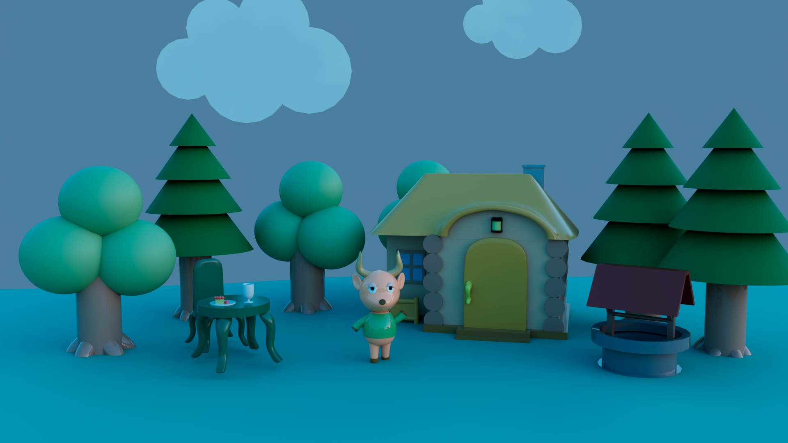
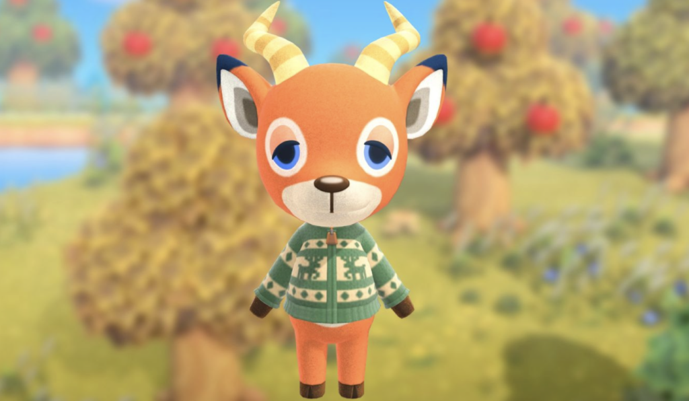
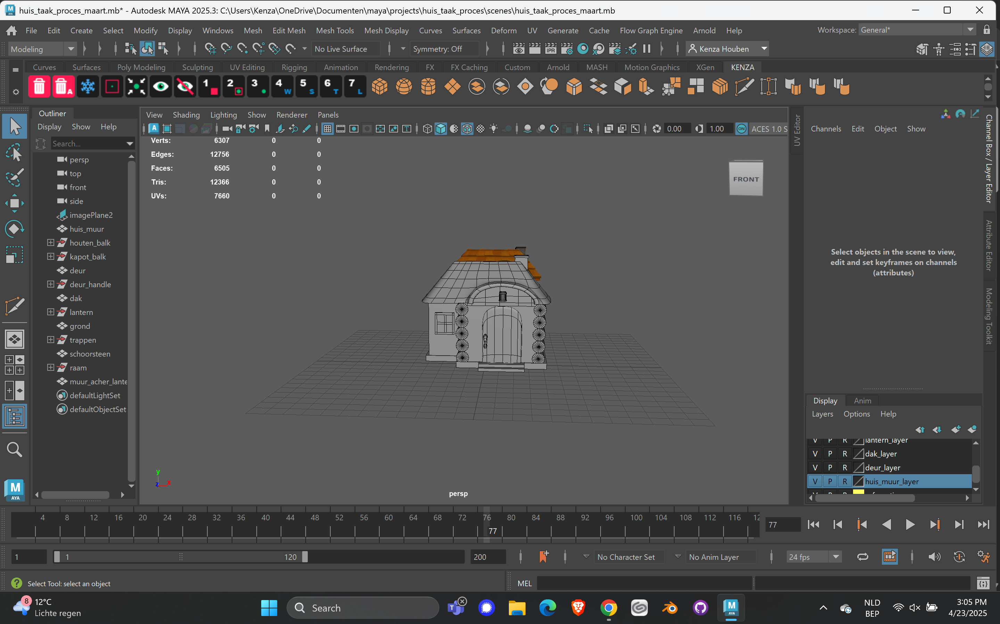
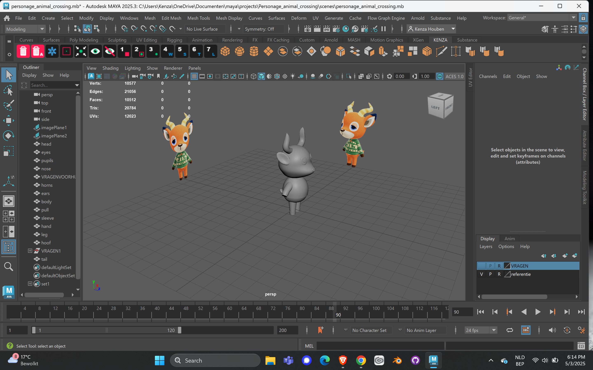
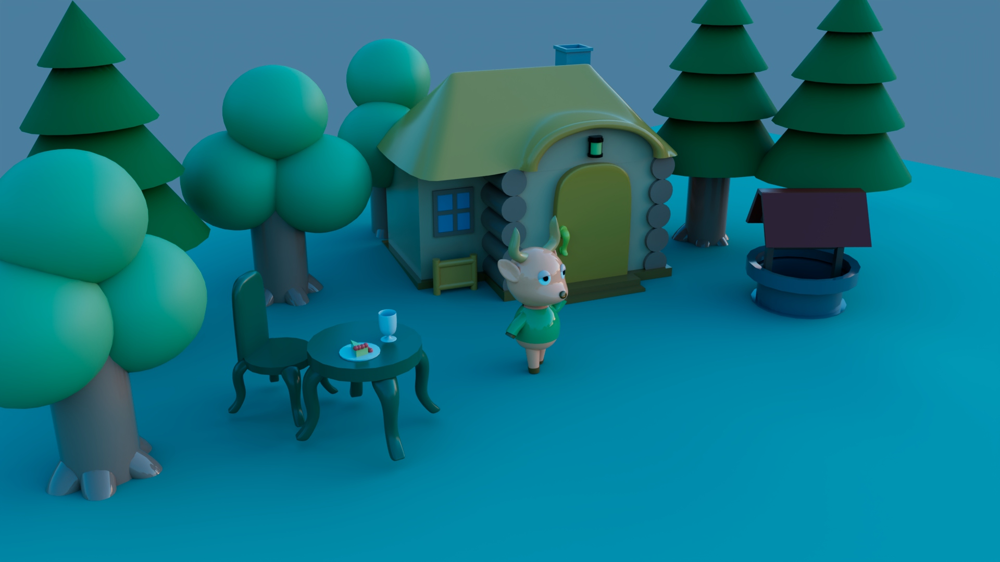
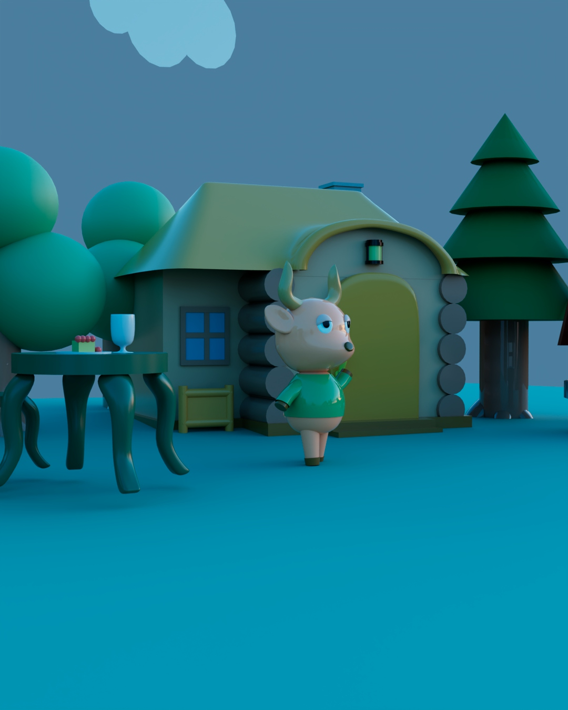

Opdracht
Voor het vak 3D aan MCT bij Erasmushogeschool Brussel kregen we de opdracht om een gestileerd huis te creëren, met extra focus op storytelling. Daarnaast voegde we een gestileerd personage toe om de scène tot leven te brengen.

Animal Crossing: New Horizons (2020) by Nintendo

Onderzoek
Met toestemming van de docent mochten we ons baseren op bestaande personages. Daarom koos ik voor Beau uit Animal Crossing: New Horizons (2020).
Ik gebruikte Beau en zijn huisje als referentie. Daarnaast nam ik andere props uit het spel, zoals een tafel en bomen, mee in mijn moodboard.

Proces


Tijdens het modelleren begon ik met het huisje en de andere props. In vergelijking met het spel hield ik zowel deze onderdelen als het personage Beau eenvoudiger.
In plaats van texturen te gebruiken, koos ik voor eenvoudige kleuren die elkaar complementeren om de stijl rustig en simpel te houden.

Eindresultaat
Mijn uiteindelijke setting was Beau die buiten in zijn voortuintje aan het wandelen was en ondertussen zijn cake opat.

